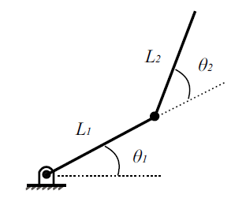

Cinemática inversa de un manipulador RR
La cinemática inversa de un manipulador consiste en calcular los valores articulares requeridos para alcanzar una determinada posición y orientación en el espacio. Existen diversos métodos para el cálculo de la cinemática inversa, desde la obtención de soluciones en forma cerrada (deseable) hasta la implementación de técnicas numéricas.

En este caso se obtendrá la cinemática inversa del manipulador planar RR de dos grados libertad utilizando tres métodos, a saber:
- Método geométrico
- Método analítico
- Utilizando la Pseudoinversa del Jacobiano
Método geométrico¶
El método geométrico, de manera general, consiste en establecer una serie de construcciones geométricas (típicamente triángulos) y mediante relaciones trigonométricas calcular los valores de interés.
De la figura podemos ver que
$$ \theta_2 = cos^{-1} $$
Comentarios
Comments powered by Disqus